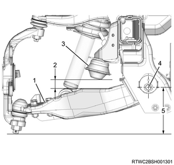
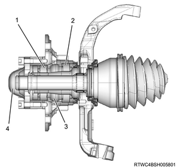
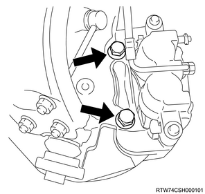

Knuckle (2WD high ride suspension) (4WD) installation (All models)
1. Knuckle installation
Note
- The following applies to the 4WD vehicles.
1. Apply the grease to the needle bearing.
Note
- Apply an appropriate amount to the new bearing.
Application quantity： 5 g { 0.18 oz }
2. Install the needle bearing to the knuckle using special tool.
Note
- Install using the needle bearing installer and grip.
SST: 5-8840-2128-0 - needle bearing installer

SST: 5-8840-0007-0 - grip
- 5-8840-0007-0
- 5-8840-2128-0
3. Apply the grease to the thrust washer.
4. Install the thrust washer to the knuckle.
Note
- Install so that the truncated side faces the knuckle.
5. Apply the grease to the knuckle.
Note
- Apply the grease to the section surrounded by the lip.
Application quantity： 2 g { 0.07 oz }
6. Install the knuckle oil seal to the knuckle using special tool.
Note
- Install the knuckle oil seal to the oil seal installer.
- Tap in until the front side of the tool contacts with the thrust washer by using a hammer or press.
- Use a new knuckle oil seal.

SST: 5-8840-2851-0 - oil seal installer
SST: 5-8840-0007-0 - grip
- 5-8840-0007-0
- 5-8840-2851-0
7. Install the knuckle to the upper control arm.
Caution
- Use a new cotter pin.
Tightening torque： 98 N・m { 10.0 kgf・m / 72 lb・ft }
2. Lower ball joint connect
1. Connect the lower ball joint to the knuckle.
Caution
- Use a new cotter pin.
Tightening torque： 147 N・m { 15.0 kgf・m / 108 lb・ft }
Note
- Adjust the trim height.
Reference value： 140 mm { 5.512 in }

- Lower control arm
- Buffer clearance
- Bumper rubber
- Center of rear side cam bolt
- Trim height
3. Dust cover installation
1. Install the dust cover to the knuckle.
4. Front wheel speed sensor installation
1. Install the wheel speed sensor to the knuckle.
Caution
- When installation, be careful for the wheel speed sensor not to hit against anything.
Note
- Tighten the sensor at the specified torque.
Tightening torque： 8 N・m { 0.8 kgf・m / 71 lb・in }
2. Connect the harness clip to the harness.
Note
- Install the harness fixing bolt, and tighten it to the specified torque.
Tightening torque： 8 N・m { 0.8 kgf・m / 71 lb・in }
Note
- Install the harness fixing nut, and tighten it to the specified torque.
Tightening torque： 20 N・m { 2.0 kgf・m / 15 lb・ft }
Note
- Connect the harness clip indicated by the arrow.

- Connector position
- Wheel speed sensor assembly
- Harness tightening nut
- Harness tightening bolt
- Sensor tightening bolt
Caution
- When installing the harness, check the harness for a twist.
5. Tie rod end installation
1. Install the tie rod end to the knuckle.
2. Install the nut to the ball joint.
Tightening torque： 98 N・m { 10.0 kgf・m / 72 lb・ft }
3. Install the cotter pin to the ball joint.
6. Front hub rotor assembly installation
1. Fill the grease in the front hub rotor assembly.
Note
- Fill the front hub and hub cap with grease.
Amount of filling： 35 g { 1.23 oz } Hub
Application quantity： 15 g { 0.53 oz } Inner bearing
Application quantity： 10 g { 0.35 oz } Outer bearing
2. Install the front hub rotor assembly to the knuckle.

- Outer bearing
- Inner bearing
- Hub
- Hub cap
7. Bearing lock nut installation
1. Install the bearing lock nut to the knuckle using special tool.
Note
- By using a hub nut wrench, install so that the truncated section in the screw hole faces the outside.

SST: 5-8840-2117-0 - hub nut wrench

8. Front hub rotor assembly adjustment
1. Adjust the preload to a standard value.
Note
- Adjust the preload for the front hub bearing.
- After tightening the bearing lock nut to the specified torque of the nut, fully loosen the nut.
Tightening torque： 29 N・m { 3.0 kgf・m / 21 lb・ft }
Note
- Hook a spring scale to the wheel pin, and gently pull it in a tangent direction. Make adjustments by tightening the bearing lock nut until the preload reaches the specified value.
Preload： 20.0 to 25.0 N { 2.0 to 2.5 kg / 4.5 to 5.6 lb } New bearing, new oil seal
Preload： 12.0 to 18.0 N { 1.2 to 1.8 kg / 2.7 to 4.0 lb } Reused bearing, new oil seal
Note
- If the preload of the front hub bearing is different from the specified value, adjust it by tightening or loosening the bearing lock nut.

9. Lock washer installation
1. Install the lock washer to the bearing lock nut.
Note
- Install it in such a way that the side with the larger taper hole diameter faces the outside of the vehicle.
- If the lock washer screw hole does not align with the corresponding hole of the bearing lock nut, turn the lock washer over.
- If the hole positions still do not align, turn the bearing lock nut in the tightening direction to adjust the hole positions to best alignment.
- Tighten the lock washer installation screw securely so that the screw head is lower than the washer surface.

10. Flange installation
Note
- The following applies to the 4WD vehicles.
1. Install the flange to the front hub.
Note
- Apply liquid gasket to the flange installation surface and install the flange to the hub.
- Liquid gasket: LOCTITE 515 or equivalent
- Install the snap ring and shim.
2. Adjust the shim.
Note
- Adjust the clearance between the flange and snap ring with the shim.
Standard： 0.0 to 0.2 mm { 0.000 to 0.008 in }
| Types of adjust shims |
| ： 0.2 mm { 0.008 in } |
| ： 0.3 mm { 0.012 in } |
| ： 0.5 mm { 0.020 in } |
| ： 1.0 mm { 0.039 in } |

11. Hub cap installation
1. Install the hub cap to the front hub.
Note
- Install the hub cap to the front hub with bolts.
Tightening torque： 59 N・m { 6.0 kgf・m / 44 lb・ft }

12. Brake caliper assembly installation
1. Install the brake caliper assembly to the knuckle.
Note
- While making sure that the flexible hose is not twisted, install the brake caliper together with the brake support.
Tightening torque： 206 to 246 N・m { 21.0 to 25.1 kgf・m / 152 to 181 lb・ft }

13. Disc wheel installation
1. Install the disc wheel to vehicle.
Note
- Install the wheel nuts in the numbered order.
Tightening torque: 120 N⋅m {12.0 kgf⋅m/87 lb⋅ft}